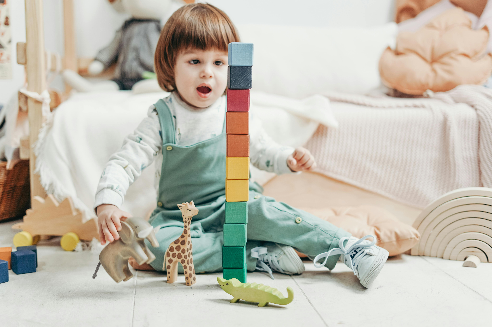

Prečo Lyoness?
Sme tím, ktorý verí, že učenie môže byť nielen efektívne, ale aj zábavné. Našou hlavnou inšpiráciou je pomôcť deťom zlepšiť ich pozornosť, pamäť a schopnosť logického myslenia. Naše hry sú navrhnuté tak, aby poskytovali pútavé výzvy, ktoré podporujú rozvoj týchto schopností prirodzeným a hravým spôsobom. Veríme, že hranie hier dokáže deťom priniesť nielen radosť, ale aj zlepšenie ich schopností zvládať každodenné úlohy.
Na našej stránke nájdete viaceré hry, ktoré pokrývajú rôzne oblasti zamerané na rozvoj kognitívnych schopností:
- Speed Match Test: Hra, ktorá trénuje rýchlosť rozhodovania a sústredenie tým, že hráči musia rýchlo rozpoznať a porovnať symboly.
- The Way to Recycling: čí deti triediť odpad, pričom si zlepšujú koordináciu, orientáciu a pozornosť.
- Pastelky: Pomáha rozvíjať krátkodobú pamäť tým, že hráči musia zapamätať farebné poradie a správne ho zopakovať.
- Zopakuj Postupnosť: Testuje schopnosť zapamätať si sekvenciu podnetov a zopakovať ju v správnom poradí, čím zlepšuje krátkodobú pamäť a koncentráciu.
- Spoj Farby: Strategická hra, ktorá trénuje logické plánovanie a priestorové myslenie. Hráč musí vyplniť hracie pole farebnými políčkami tak, aby žiadne políčko neostalo prázdne a farby sa neprekrývali.